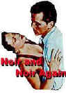
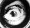

DVD Review Archive
Feature Archive Links DVD MIA DVD
Alerts Movie Posters Laser Site Info Home E-mail
© 2002 Films on Disc Stuart J. Kobak ALL RIGHTS RESERVED.
|
|
Tim Robbins' sprawling, ambitious film about 1930s America, the Depression and the Federal Theater Project is often fascinating, succeeds brilliantly with casting, and alas, also fails miserably with casting.
The film
alternates between various related plotlines. The central plot
focuses on the Federal Theater's production of Mark Blitzstein's
Brechtian union/strike themed musical, Cradle Will Rock. Welles
directs, Houseman produces, hungry actors perform from a variety
of motivations. In the meantime, Nelson Rockefeller seeks out
and hires great Mexican muralist Diego Rivera to paint the
central mural for Rockefeller Center, while head of the Federal
Theater Project, Hallie Flannagan must contend with the odious
Dies Congressional Committee investigating un-American
activities in the arts. Behind the scenes at the Federal Theater
Project, clerk Hazel Huffman busily snipes at the communist
elements within the program and pathetic vaudeville
ventriloquist Tommy Crickshaw woos Huffman while vainly trying
to train a pair of actors in his wooden art. Steel Magnate Gray
Mathers is buying up precious Italian art for himself and friend
William Randolph Hearst and waif Olive Stanton is relishing her
big acting break and clinging to a relationship with union
representative John Adair.
|
|
The Movie Poster Archive include extensive poster images from the films of stars like Susan Hayward, Kirk Douglas, Katharine Hepburn and many more. This month's featured star is Tyrone Power. Selections from the feature archive include articles on Akira Kurosawa, Frank Darabont, Blonde Bimbos, Hollywood Street Gangs, or Vietnam: The Hollywood Pariah, and many more....  Film noir: The phrase hangs awkwardly on the tongue, shadowy images peek out from behind half-closed doors. Click on the Noir and Noir Again symbol for a look into the dark spaces of Hollywood's revisiting of film noir.
Sight and Sound Magazine is the venerable voice of The British Film Institute. The site includes articles and film reviews. A great resource in print and on the Internet. A love of movies drives this small DVD production company, Synapse Films. Currently specializing in horror and cult films. Watch for new DVD releases of film festival independents as Synapse branches out.  Kinoeye ArchiveThis is a resource of all content-rich materials on the web relating to Central and East European cinema. The ultimate aim of the Kinoeye Archive is to provide a near-as-damn-it definitive index of intelligent and thoughtful English-language analysis of Central and Eastern European cinema on the web.
|